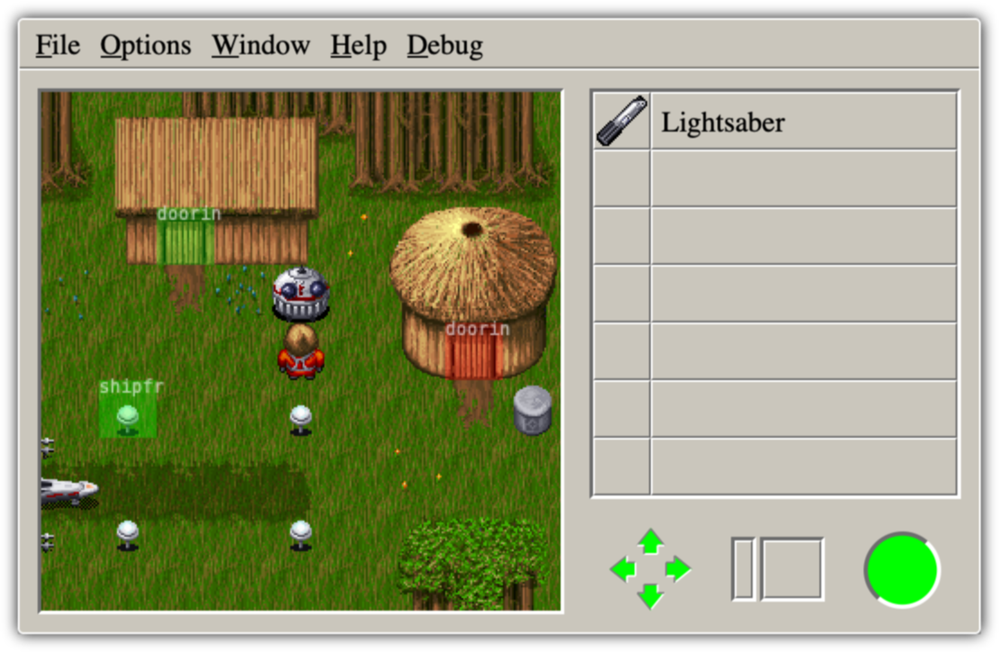

Zones
Zones are the game's maps, where the hero can walk around, solve puzzles and fight monsters.
They are made up of 9x9 or 10x10 tiles in three layers. A ground layer, and object layer, used for collision detection, and a roof layer that is rendered above the hero.
Each zone has a type that is used in the world generation process. See the following table for a list of zone types:
| Type | Name | Description |
|---|---|---|
| 0 | None | |
| 1 | Empty | An empty zone |
| 2 | Blockade North | Blocks access to zones north of this one until solved |
| 3 | Blockade South | Blocks access to zones south of this one until solved |
| 4 | Blockade East | Blocks access to zones east of this one until solved |
| 5 | Blockade West | Blocks access to zones west of this one until solved |
| 6 | Travel Departure | When solved this allows the player to reach a zone on an island that can otherwise not be reached by moving between zone on the main world |
| 7 | Travel Destination | Counterpart to Travel Departure. This is where a here will land after traveling from the departure zone. The zones are connected via hotspots of type TravelStart and TravelEnd |
| 8 | Room | Rooms can n not be placed directly on the main world. They can be only be reached through DoorIn/DoorOut hotspots or via ChaneZone instructions. |
| 9 | Load | This zone is displayed while a new story is generated. |
| 10 | Goal | Goal zones are used for the final puzzles in each story. |
| 11 | Town / Spaceport | The starting zone on the main world. Every generated world has exactly one town. |
| 12 | Unknown | |
| 13 | Win | Shown when the game is won. This zone also displays the score. |
| 14 | Lose | This zone is shown after the hero has died. |
| 15 | Trade | A zone where the player has to trade items with an NPC to solve the puzzle. |
| 16 | Use | In order to solve this zone a tool must be used somewhere on the zone. |
| 17 | Find | Find zones provide an item without requiring anything else to solve them. |
| 18 | Find Unique Weapon | One of these will be placed close to the town. it provides a unique weapon (The Force in Yoda Stories) to the player. |
Additionally each zone provides lists of tiles that can be used to solve the puzzle, NPCs that can be used to trade with and tiles that the zone can drop when solved. In the world generation these items are chosen semi-randomly to create a new story every time.
On the world map neighboring zones can be visited by walking off the current zone. Additionally zones are connected through doors.
In order to make zones a little more interesting to play and replay, the game includes a custom scripting language. These actions are defined per zone.
Special points of interest on a zone are marked by hotspots. These locations mark doors, or places where an item can be used or an NPC be placed by the world generator.
In Yoda Stories, every zone belongs to one of the following planets:
| Planet | Â Name | Description |
|---|---|---|
| 1 | Tatooine | Desert planet, also referred to as Nevada |
| 2 | Hoth | Snowy ice planet, also referred to as Alaska |
| 3 | Endor | A forest planet, also referred to as Oregon |
| 5 | Dagobah | Swamp planet, used in the staring world |
Actions
Actions can make zones more interactive and dynamic. They are used for example to implement switches and in-game cut-scene animations. Each action is made up of a bunch of conditions and instructions that are executed if all conditions are satisfied.
See Scripting for a more detailed description of the internal scripting language.
Hotspots

Each hotspot has a position on the map, a type, and a single argument. Unless disabled, hotspots are triggered by placing an item, walking to the location or removing the tile at the object layer underneath the hotspot.
The following table describes the hotspot types and their purpose:
| Type | Name | Description |
|---|---|---|
| 0 | Drop Quest Item | |
| 1 | Spawn Location | |
| 2 | Drop Unique Weapon | |
| 3 | Vehicle To | Used in Travel Start zones, to change the zone to the travel target (identified by arg). On the target zone, the hero will be placed at a corresponsing Vehicle Back hotspot. |
| 4 | Vehicle Back | |
| 5 | Drop Map | Drops the locator |
| 6 | Drop Item | Drops the item specified in arg when the object layer is free |
| 7 | NPC | A place where the puzzle NPC from arg can be placed. |
| 8 | Drop Weapon | Drops the weapon specified in arg |
| 9 | Door In | Connects the zone to the one in arg. |
| 10 | Door Out | A door leading back to the zone where the player came from |
| 11 | Unused | |
| 12 | Lock | This is a placeholder for a item in a use zone. Placing the correct item here removes the underlying tile from the object layer. |
| 13 | Teleporter | A place where the locator view is triggered for telportation |
| 14 | Ship From Planet | |
| 15 | Ship To Planet | Used on Dagobah to mark the place to switch worlds. The target zone on the main world is specified in arg. |
Monsters
TODO: Describe monster attributes, waypoints, drops, etc.